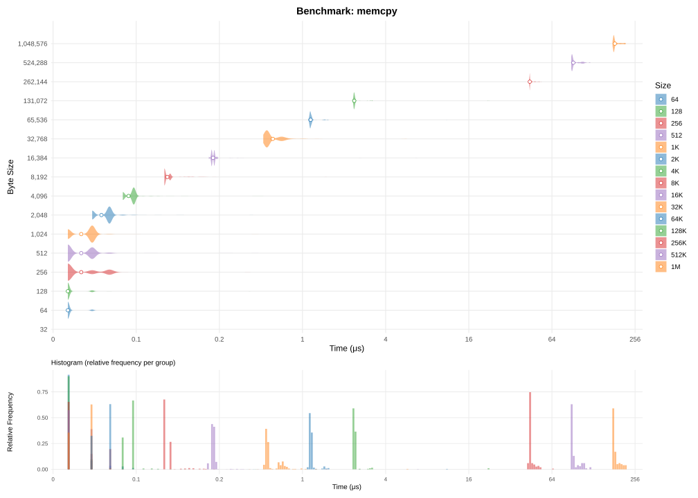
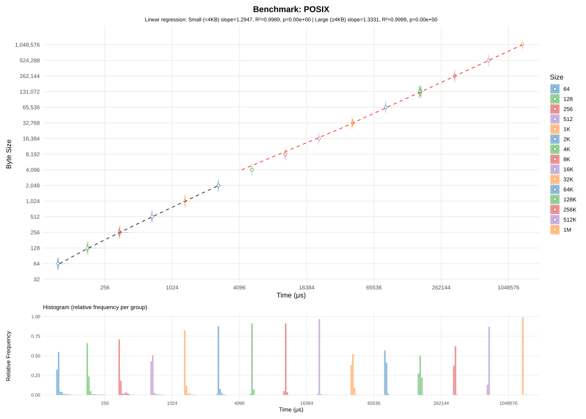
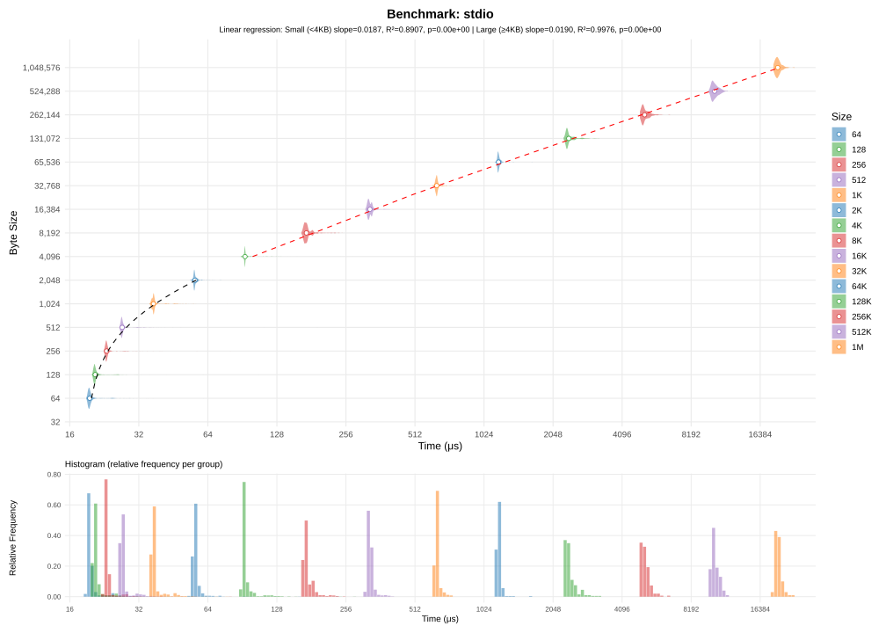
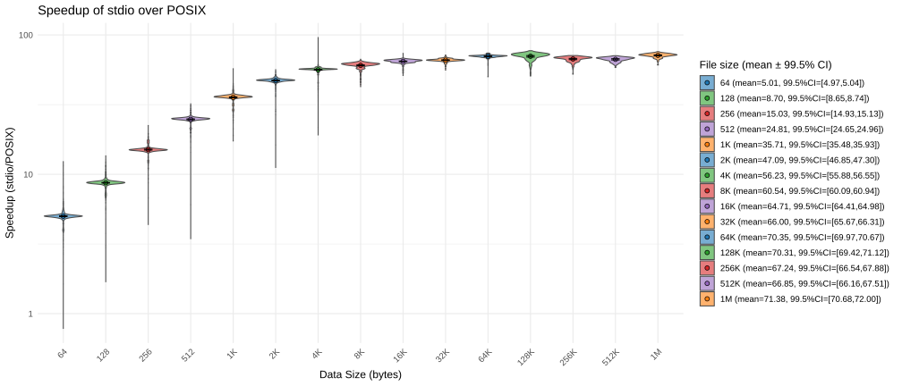
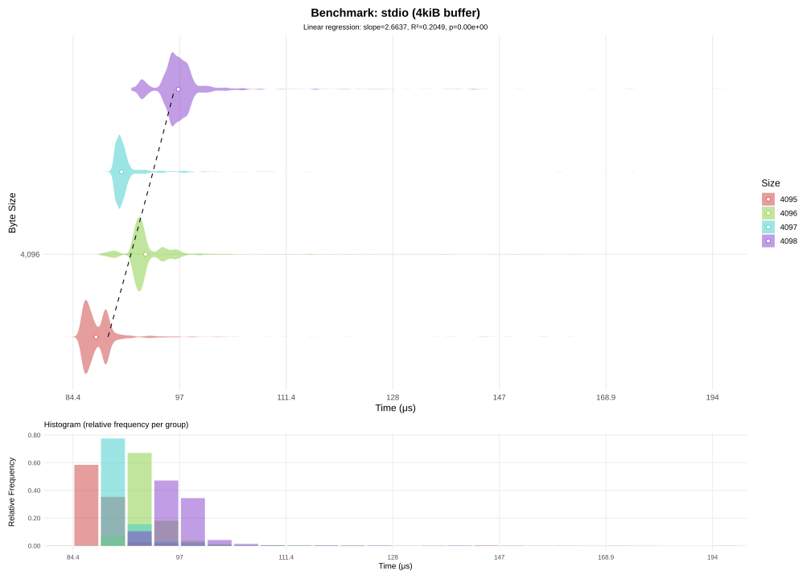
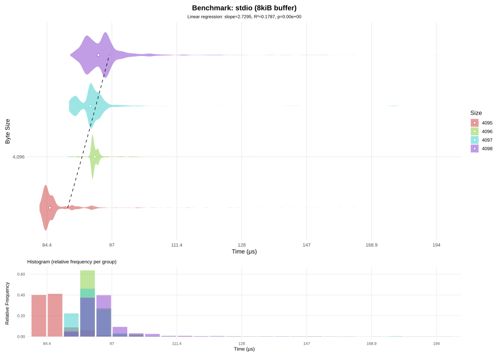
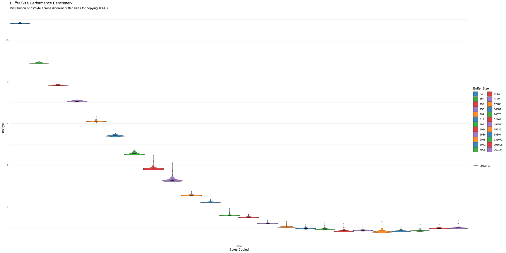
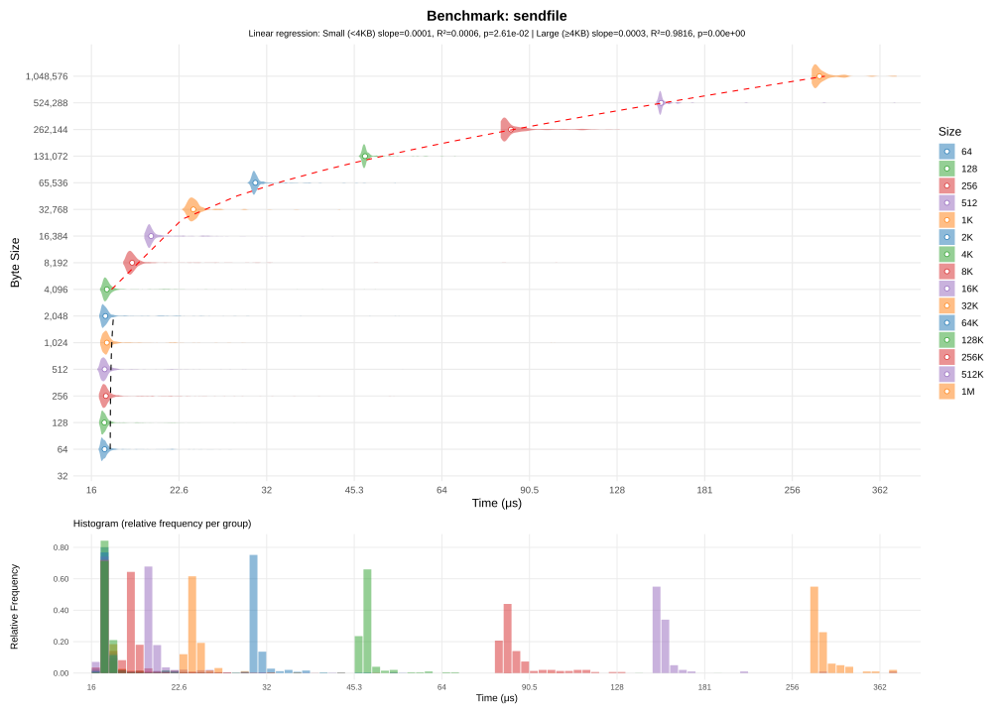
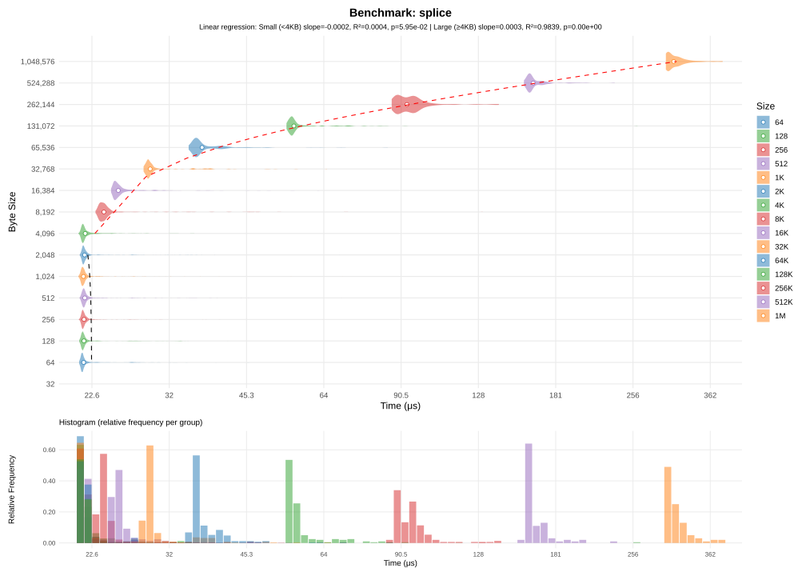
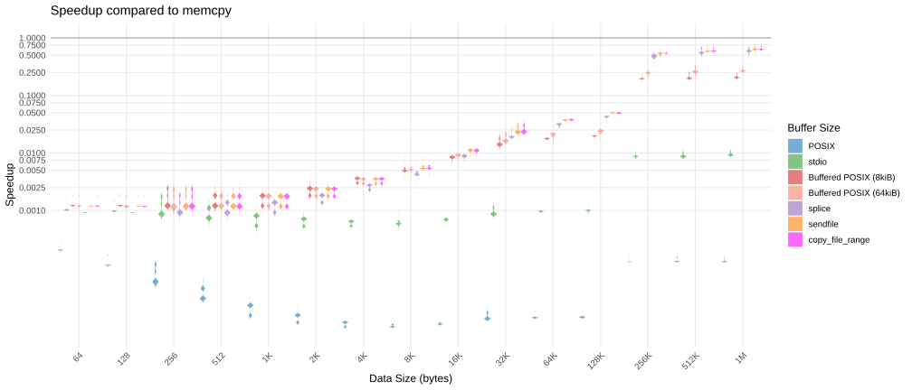

{kind=link}
{kind=link}
{kind=link}
{kind=link}
{kind=link}
{kind=link}

(7) buffered POSIX copy
If you've ever done system programming in C, you may have noticed that the standard doesn't include a function to copy files on disk directly. There is no built-in function like copyfile(const char *from, const char *to, int flags) that copies a file in a single call. At first glance, this might feel like a missing piece of the standard library. Sure we can open, read and write to files using standard C functions. But there is no single function to copy an entire file at once. You could write your own copyfile function using just the standard library, but would that be a good idea?
If you want the copied file to preserve permissions, symlink status, ownership, and other metadata, the C standard library does not provide the necessary tools. However, if all you want is to copy the content of a regular file, then there are plenty of tools available. Especially on POSIX-compliant systems like Linux, there are many ways to perform file I/O efficiently and inefficiently.
In this article, I’ll walk you through six ways to copy files on Linux and highlight the pros and cons of each method.
In this section, I'm looking at how fast my system can copy bytes without performing any I/O operation. This benchmark ignores I/O and is meant to establish a limit for how fast the system can copy bytes. Think of memcpy as the theoretical limit: every copy method we discuss later can be compared against it.

(1) memcpy
I won't dive into all the details of memcpy, but it's highly optimized on modern systems. Internally, it uses unrolled loops and SIMD instructions to copy multiple bytes per instruction, maximizing throughput. For very large buffers, memory bandwidth and TLB misses start to dominate, which explains the higher per-byte cost we observe. Essentially, when the buffer exceeds 128 KiB, the CPU has to fetch data from main memory instead of the cache, which slows things down.
Let's begin with the most basic file-copying method available on POSIX systems: using the raw system calls open, read, and write.
First, we open the input file with O_RDONLY (for reading). Next, we open (or create) the output file with O_WRONLY | O_CREAT, this opens the file for writing, replacing any existing file. We then repeatedly call read to pull one byte at a time from the input file, and write to push that byte to the output file. This naive method makes direct calls to read and write until there are no bytes left to read in the file.
void
copy_posix(const char* in, const char* out)
{
int fd_in = open(in, O_RDONLY);
int fd_out = open(out, O_WRONLY | O_CREAT, 0666);
unsigned char c;
while (1) {
/* read one byte */
if (read(fd_in, &c, 1) != 1)
break;
/* write one byte */
if (write(fd_out, &c, 1) != 1)
break;
}
close(fd_out);
close(fd_in);
}
This function reads and writes 1 byte at a time. While it's fairly straightforward, it's not exactly fast. In fact, if you try to run this function, you'll see that it's excruciatingly slow. On my system, it took 29 seconds to copy a single 10MB file. It's not that my disk is slow, in fact it can reach upwards of 500MB/s of read+write speed. The issue comes from how we're copying the data. Actually, performing the same copy using the cp utility from GNU coreutils takes ~9 milliseconds only (and that's considering the entire overhead of executing cp from a shell).
Why the enormous difference? Each call to read or write triggers a system call, which means crossing the boundary between user mode and kernel mode. This triggers a mode switch. A single round-trip syscall typically costs 200–1000 ns, and this implementation performs two per bytes. Even worse than that, is the fact that when you're calling slow i/o syscalls like read, the kernel may decide to run another program while the read is fetching data from disk. That program may keep running after the disk has returned data, thus delaying our program from continuing.
Here's a simplified diagram of what happens when you call to read():
┌───────────┐ ┌─────────────┐ ┌──────┐
│ User mode │ │ Kernel mode │ │ Disk │
└───────────┘ └─────────────┘ └──────┘
│ │ │
│ read() call │ │
├──────────────────>┤ │
│ 100-500ns │ │
│ │ │
│ │ │
│ In Page Cache? │
│ yes │ no Submit disk I/O │
│ ┌────┼──────────────────────────>┤
│ │ │ 50-200us (SSD) │
│ │ │ 5-10ms (HDD) │
│ │ │ │
│ │ │ Chunk mapped to memory │
│ └───>┼<──────────────────────────┤
│ │ │
│ │ Copy to user buffer │
│ ├────────────────────┐ │
│ │ 50-300ns │ │
│ ├<───────────────────┘ │
│ read() return │ │
├<──────────────────┤ │
│ 100-500ns │ │
│ │ │
write() has a similar diagram, expect we don't suffer from the disk's latency since the kernel usually flushes the writes later on, without making the program wait. In the meantime, the written data sits in the kernel page cache.
The fundamental problem is that we're involving the disk, one of the slowest component of your system. In the time it takes for your disk to return the data we asked for, the CPU could have executed almost half a million basic instructions. That's the reason why modern kernels perform aggressive caching when doing i/o with the disk. Even though we request a single byte to be read every time, the kernel will typically read several kilobytes from disk into the page cache, then serve only the requested byte.
This is further justified by the fact that disks can't read one byte at a time. Disks operate on a block-basis, and you may not read less than one full block at a time. You can check your disk's block size by doing this: cat /sys/block/sdX/queue/physical_block_size (usually 512 bytes). On top of that, filesystems usually impose their own logical block size on top of the disk's physical block size. This value can be checked in /sys/block/sdX/queue/logical_block_size, and it usually 4kiB for Ext4.
Writes behave similarly. Thanks to the page cache, a write call usually does not write to disk immediately. Instead, the kernel buffers modifications and flushes them later when convenient. This improves performance dramatically, but can cause data loss on unexpected power-offs, one of the reasons why databases often bypass the page cache entirely. However, in most use-cases, caching improves performances drastically, especially if multiple programs try to read the same file simultaneously.

(2) naive POSIX copy
In this section, I'll rewrite the previous POSIX copy function using only features in the C standard. I've replaced open with fopen, write with fwrite, etc.
The whole function looks something like this:
void
copy_stdio(const char* in, const char* out)
{
FILE* fin = fopen(in, "r");
FILE* fout = fopen(out, "w");
while (1) {
unsigned char c;
/* read 1 byte */
if (fread(&c, 1, 1, fin) != 1)
break;
/* write 1 byte */
if (fwrite(&c, 1, 1, fout) != 1)
break;
}
fclose(fout);
fclose(fin);
}
Under the hood, a lot of things happen when we call fopen, fread and fwrite. The standard is pretty vague on how they work, but a lot of implementation add their own salt on top of what the standard requires. For instance, the standard never defines what should happen in a multi-threaded context, nor what happens when multiple programs read/write to the same file simultaneously.
But the standard does mandate one thing: I/O operations (fread, fwrite, etc.) have to be buffered. This means is that, when reading a single byte, more bytes may be requested to be available for later calls. I say may, because the standard says nothing about how buffering works in detail for these operations.
Below is the diagram on how fread() should work:
┌───────────┐ ┌─────────────┐
│ Program │ │ libc │
└───────────┘ └─────────────┘
│ │
│ │
│ │
│ │
│ │
│ │
│ fread() call │
├──────────────────>┤
│ │
│ In libc buffer?
│ yes │ no read() call ┊
│ ┌────┼─────────────────────>┤
│ │ │ │
│ │ │ read() return │
│ └───>┼<─────────────────────┤
│ │ ┊
│ │
│ │ Copy to user buffer
│ ├────────────────────┐
│ │ │
│ ├<───────────────────┘
│ │
│ │
│ fread() return │
├<──────────────────┤
│ │
│ │
Note that many implementations add more stuff on top of fread. Notably glibc adds mutex locking to prevent multiple threads from using the underlying data simultaneously. Nevertheless, most implementations will attempt to efficiently manage their internal buffers, in order to minimize the number of read() system calls required.
In practice, libc's buffering is not meant to squeeze performance, but to make the experience less painful. For instance, when writing to stdout or stderr, libc will flush every time a \n is encountered.

(3) libc's stdio copy
If you pay attention to details, you may have noticed that the time is roughly the same for all sizes under 1kB. When I run the program under strace for a 512-bytes file:
[...]
openat(AT_FDCWD, "in.bin", O_RDONLY) = 3
openat(AT_FDCWD, "out.bin", O_WRONLY|O_CREAT|O_TRUNC, 0666) = 4
# First fread call
# fstat in.bin
fstat(3, {st_mode=S_IFREG|0664, st_size=512, ...}) = 0
read(3, "h#\211\277p\\\257\372\202\232\2\255\r=\304c\314\207\306\331\243\203}x\7t\327\241\277\211\305\360"..., 4096) = 512
# fstat out.bin
fstat(4, {st_mode=S_IFREG|0664, st_size=0, ...}) = 0
read(3, "", 4096) = 0
# After last fwrite call, before calling close, stdio will sync it's buffer with the file, calling write to do so
write(4, "h#\211\277p\\\257\372\202\232\2\255\r=\304c\314\207\306\331\243\203}x\7t\327\241\277\211\305\360"..., 512) = 512
close(4) = 0
close(3)
[...]
The first thing to notice is that even though we call fread and fwrite hundreds of times, read and write are only called once. Another odd fact is that fread will call fstat. There are many reasons for wanting to stat the file, but one reason is that stdio needs to select an appropriate flushing strategy. For instance when writing to a PIPE, data is usually flushed every time a newline (\n) is encountered, similarly this is used when writing to stdout/stderr, so your messages don't appear at the end of the program when file descriptors are closed. However, another reason for stat-ing the file is to determine the size of the file in advance. Even though I requested for a single byte to be read, fread asked for 4096 bytes to be read to the kernel. 4096 bytes might seem like an odd value, but it's actually a really specific value: the size of a memory page. In fact, if we look into how direct memory access for file descriptor works on Linux, open(2) man page says:
O_direct
[...]
Under Linux 2.4, transfer sizes, and the alignment of the user buffer and the file offset must all be multiples of
the logical block size of the file system. Under Linux 2.6, alignment to 512-byte boundaries suffices.
Since the logical block size for Ext4 is 4096, the kernel can't read less than 4096 bytes at once. However the story doesn't end here. Not only does stdio use buffering, the kernel page cache still applies when stdio calls to read or write. These buffers usually allocate at least one memory page, which corresponds to that 4096 bytes that read is invoked with. So it would look like glibc is doing a great job at buffering, it seems to be correctly exploiting the various hard constraints from the filesystem, kernel and memory.
To test this, I computed a speedup comparison of stdio vs POSIX copying:

(4) stdio copy vs naive POSIX copy
As you can see, using stdio really did improve copying speed. Once the file size exceeds 4KiB, the copy is about 60x faster. That's a huge improvement. But we're still lagging far behind the simple cp utility. However, stdio is not always your friend. I ran the same benchmarks as before, this time using sizes close to the page boundary. The results speak for themselves:

(5) stdio copy around the page boundary size
There seems to be a significant overhead around 4096 bytes, which is odd since this is the page boundary. Meaning that the same number of syscalls should be made than for copying 4095 bytes. What is even weirder, is the fact that it's slower than copying 4097 bytes. Looking at strace, 4097 bytes does cause additional system calls, since stdio will now have to read two pages. This is a hint, that what is slowing us down is not system calls, but stdio itself. To be sure of that, I set stdio's buffer size to 8kiB:

(6) stdio copy around the page boundary size with an 8kiB buffer
This tells us that stdio is the culprit, but this change only moved the problem further down the line. Performing copies of about 8192 bytes will highlight the same issues as before.
Which is why it might be time to learn buffering for ourselves. In the next section I'll show you how you can squeeze performances by using your own buffering.
As I've stated in the previous section, fread and fwrite have their own buffering. And while not always optimal, it still performs way better than not using any buffers at all. So we'll implement our own custom buffering to find whether we can get more performances than stdio.
The basic idea behind buffering is that performing system calls (which in terms perform I/O operations) is inherently slow. So we do as much as possible to minimize the number of system calls our program will have to perform. In practice, that means reading more bytes at once, and letting read or write tell us how many bytes were actually read or written.
#define BUFFER_SIZE (8192)
void
copy_posix_buffered(const char* in, const char* out)
{
int fd_in = open(in, O_RDONLY);
int fd_out = open(out, O_WRONLY | O_CREAT, 0666);
unsigned char buf[BUFFER_SIZE];
while (1) {
/* read up to BUFFER_SIZE bytes */
ssize_t nread = read(fd_in, buf, BUFFER_SIZE);
if (nread <= 0)
break;
size_t pos = 0;
/* write nread bytes */
while (pos != (size_t)nread) {
ssize_t nwrite = write(fd_out, buf + pos, (size_t)nread - pos);
if (nwrite < 0)
goto end;
pos += (size_t)nwrite;
}
}
end:
close(fd_out);
close(fd_in);
}
This function is similar to POSIX copy, however instead of reading and writing single a byte, we process 8192 bytes at once. Why that number you may ask? We'll see later why choosing the right buffer size matters.
In theory, since our previous POSIX copy was being slowed down by the high number of systems calls, using a buffer should mitigate that. If the bottleneck really was the number of system calls, this one should be much faster since we've slashed the number of system calls made by about 8192.
And here are the results:
(7) buffered POSIX copy
What comes next, is naturally to test different buffer sizes and see how they affect the copying speed. Below is a benchmark of 20 different buffer sizes, to see how they affect the average copying speed:

(8) buffered POSIX copy with 20 buffer sizes
As expected, the larger our buffer is, the faster the copy becomes. It would look like it's always optimal to use a very large buffer. Buffer size 64k is outperforming every other sizes, but there's a caveat to that.
First of, larger buffers require more memory and may greatly exceed the size of the read file. As stated previously, due to ext4's restrictions, a file may not occupy less that 4kiB of disk space, so that is a hint that our buffer size should be at least 4kiB. However using a 64kiB buffer to read a small file may waste a larger amount of memory, depending of where you put your buffers. But while memory is cheap, cache is not. When your buffer fits in cache entirely, you will get the best speedup possible. If your buffer has to be in memory, then you suffer from the CPU <-> memory communication slowdown. Looking at cachegrind, we get 0.08% cache misses for a buffer of 64kiB, while a buffer of 8192 gets almost no cache misses.
The second reason is that calling read will always force the kernel to read the requested number of bytes. In theory that is a good thing, if you know the exact size of the file, you can allocate a large-enough buffer and read it in one system call. However, the kernel won't always do exactly as you planned. When you request for data to be read, that request gets split into 4kiB pages and stored in the kernel's I/O Scheduler. Then it's up to the kernel to decide when to honor these requests. It may decide to read a few pages for your process, then read another page for another process. This what's called fairness, and it's a major factor into making your operating system responsive. E.g no single process may block I/O for all others. In practice, that means sacrificing time where your program could have been performing other tasks.
Here's an example of how that might work:
┌─────────────┐ ┌────────────┐ ┌──────────┐
│ Process A │ │ Kernel │ │ Disk │
└─────────────┘ └────────────┘ └──────────┘
│ read(16kiB) │ │
├───────────────────>┤ │
┊ │ │
┌─────────────┐ │ │
│ Process B │ │ │
└─────────────┘ │ │
│ read(4kiB) │ │
├───────────────────>┤ │
┊ │ │
┌─────────────┐ │ │
│ Process C │ │ │
└─────────────┘ │ │
│ metadata I/O │ │
├───────────────────>┤ │
┊ │ Requests are split │
│ into 4kiB chunks │
┌────────┴─────────┐ │
│ I/O Scheduler │ │
├────┬─────────────┤ │
│ ID │ Request │ │
├────┼─────────────┤ │
│ 0 │ A read 4kiB │ │
│ 1 │ A read 4kiB │ │
│ 2 │ B read 4kiB │ │
│ 3 │ A read 4kiB │ │
│ 4 │ C metadata │ │
│ 5 │ A read 4kiB │ │
└────┴───┬─────────┘ │
│ Issue reads 0-2 │
├───────────────────────────┤
│ │
├<──────────────────────────┤
┊ Wake up B │ │
│<───────────────────┤ │
┊ │ Issue reads 3-5 │
├───────────────────────────┤
│ │
├<──────────────────────────┤
┊ Wake up A │ │
│<───────────────────┤ │
┊ │ │
│ │
┊ Wake up C │ │
│<───────────────────┤ │
┊ ┊ ┊
This is just a simple model, in reality a lot more goes on.
The kernel doesn't just split requests for fairness. The main reason is that I/O is faster when batched (and sequential on SSDs). As stated earlier, since we want to do as little I/O operations as possible (those are slow), the kernel makes a batch of i/o operations to execute later.
For really large buffers, we start to see these diminishing returns:

(9) buffered POSIX copy on a 10MiB file
Checking with cachegrid, we can see that cache misses start appearing for buffers over 64kiB. Even though misses are small, they may evict other relevant data from caches, which can lead to a slowdown further down the line.
From this information, we will derive a number: the overhead of system calls; the total time spent by the program while performing syscalls. That number should help us decide which buffer size is optimal for copying a file of given size.
The system calls overhead can be defined as follows:
We perform one read plus one write system call for every piece of data we need to transfer.
In order to determine the values of and accurately, I'll consider these first order approximations:
Constants should encapsulate the constant overhead of performing system calls. Constants should represent how much overhead is required for each read/written bytes (I/O time and time spent by the kernel copying bytes across buffers).
To test out this hypothesis, I will run a micro benchmark measuring every read and write, then we'll see if a linear regression fits the data. In that case, the slope and intercept will give the and coefficients respectively.

(10) pre-read overhead for buffered POSIX copy
The slope is roughly , meaning that every additional byte adds about of read time. The intercept, , is very large for a system call. But since the distribution is multi-modal, that intercept should be interpreted with a grain of salt.

(11) pre-write overhead for buffered POSIX copy
Due to the fact that the kernel is buffering all writes, what we see is a pure system-call scenario, without I/O. This confirms that for every system call, there will be a overhead (round trip), then it takes per bytes copied. That matches the overhead for copying a buffer (e.g through memcpy).
Therefore, the simple first order approximation seems to fit the data correctly. Thus, We can express the syscall overhead like this:
Looking at the terms, there's a constant factor that doesn't vary when we increase or decrease the buffer size. So the only term we can act on is . It would look like we'd get better results by indefinitely increasing the buffer size. However, as stated previously we don't want extremely large buffers.
So what we want is a buffer size large enough, so that the constant syscall overhead becomes negligible compared to the per-byte copy overhead.
Let's define as how much overhead from the per-syscall term we can tolerate over the per-byte term:
If we substitute , meaning we tolerate 1% of overhead over the per-byte term: . Rounding up to the nearest page boundaries: . Therefore, to minimize the per-syscall overhead, we need a buffer that can hold at least 13 memory pages. But note that there are other ways to tackle this. For instance, using 16 pages would make the kernel readahead bytes become a multiple of our buffer size, thus triggering at regular number of read calls. However, this analysis doesn't describe what happens for small buffers ( ), nor what happens for larger buffers ( ) where cache misses and kernel readahead spikes become dominant.
Overall, buffering will drastically improve copying performances. Even for smaller files, a small buffer will already yield significant speedups. And for most applications, buffering alone is often sufficient to improve read/write speeds. That said, there's an unexplored blind spot in this method. I've kept writing about how the kernel does buffering on its end too, so what would happen if we could take advantage of the kernel's buffering? Since reading and writing are both system calls, could we delegate the copy entirely to the kernel? That's what we'll see in the next section.
In this section, I'll write about these 3 specific linux system calls:
The main particularity of these system calls is that they perform copying entirely in kernel mode, also referred to as zero-copy. There are no buffers you have to manage, no read/write separation, everything is handled by these calls.
The main benefit of using these is that the kernel doesn't have to give you a buffer from reading, that you then send back to the kernel for writing. That's an added benefit since you also don't have to allocate any additional memory to store your buffers. That also means less cache pollution, CPU usage and memory bandwidth. Since now there's only one buffer containing the data, which should also improve the per-byte overhead. Furthermore the kernel is doing the heavy-lifting, therefore it can better adapt to the system's current conditions such as a busy filesystem, or I/O congestion.
Here's a rough sketch of how kernel-copy might work:
┌───────────┐ ┌────────────┐
│ Process │ │ Kernel │
└───────────┘ └────────────┘
│ copy(A, B) │
├─────────────────>┤
│ │ stat file A
│ ├───────────────┐
│ │ │
│ ├<──────────────┘
│ │ Allocate buffer to hold
│ │ A, optimized for copy
│ ├─────────────────────────┐
│ │ │
│ ├<────────────────────────┘
│ │
│ ├<────────────────────────────┐
│ │ Read A into buffer │
│ ├──────────────────────┐ │
│ │ │ │
│ ├<─────────────────────┘ │
│ │ Write buffer into B │
│ ├──────────────────────┐ │
│ │ │ │
│ ├<─────────────────────┘ │
│ │ Repeat until EOF │
│ ├─────────────────────────────┘
│ return │
├<─────────────────┤
┊ ┊
That logic flow isn't different from the previously mentioned copy methods, but we no longer suffer the cost of performing repeated system calls.
As a side note, copy_file_range works differently on some filesystems. On Btrfs copy-on-write is supported, meaning that no data is ever copied. Instead the files are marked as holding the same content, which means the copy will be performed only once one of them is modified. However that's not the case on Ext4, meaning the kernel is actually copying bytes.
So here are the results for these 3 system calls:

(12) sendfile copy

(13) splice copy

(14) copy_file_range copy
The first thing that we notice is that they all seem to have similar performances. In fact the regressions (for larger files) all have the same slope of . In order to better compare them, below is a comparative plot of the three methods:

(15) comparative plot of sendfile and splice against copy_file_range
In practice, copy_file_range is the most appropriate function for copying files, as the two others are generally used for other purposes. For instance, sendfile is generally used for serving files over a socket without having to copy the file in userspace (requiring less memory and less CPU usage). While splice is useful for sending data between pipes.
With these kernel-level copy methods, we're getting performances close to the memcpy-only method presented in the first section.
Comparing copy_file_range against buffered POSIX copy gives this graph:

(16) copy_file_range vs buffered POSIX copy
Overall copy_file_range is faster than all other methods previously discussed in this article. However, these performances come at a cost: copy_file_range is unable to copy files across filesystems. According to the manual, trying to do so will result in EXDEV:
EXDEV (before Linux 5.3)
The files referred to by fd_in and fd_out are not on the same filesystem.
EXDEV (since Linux 5.19)
The files referred to by fd_in and fd_out are not on the same filesystem, and the source and target
filesystems are not of the same type, or do not support cross-filesystem copy.
This is a fundamental limitation compared to simply using read+write. In practice, you can fall back to buffered POSIX copy when kernel-level copy isn't possible.
Nevertheless, when conditions are appropriate, copy_file_range should be the preferred method for copying files.
Also, since it requires a single call, error handling becomes simpler. Compared to repetitively calling read and write, where every call is a potential source of errors.
Here's a comparative graph showing all every copy method compares against memcpy:

(17) Comparison of all copy methods mentioned in this article
In this article, we explored multiple ways to copy files on Linux, each with its own trade-offs in terms of simplicity, performance, and system requirements. Here's a concise summary:
For most applications, buffered POSIX or standard C copy is sufficient, especially if you need portability or fine control over buffering. However, for maximum performance on Linux, leveraging kernel-assisted zero-copy methods like copy_file_range is the clear winner. They reduce CPU load, memory overhead, and achieve throughput close to the theoretical limits of the underlying storage.
Ultimately, the best method depends on your constraints:
By understanding how each method interacts with the kernel, system calls, and caching, you can make informed decisions when designing high-performance file-copy routines on Linux.
In this article filesystem-level copy has been left unexplored. These are special types of copy operations that rely on filesystem-specific features. As mentioned previously, btrfs has a copy-on-write feature. That means making a copy of a file is a trivial operation that doesn't even require reading the original file at all. Instead, the filesystem marks both files as holding the same content, and the copy will only be performed if you modify either of those file.
It is also possible to create a kernel-level copy by using Linux's io_uring feature. However, since we already have copy_file_range, such a method may not yield any advantages over the kernel-level copy methods already available. As a side note, copy_file_range was added in Linux 4.5, while io_uring was added in Linux 5.1. And as of today io_uring is still tricky to work with and prone to errors. On top of that, since glibc 2.27, a retro-implementation (in user-space) of copy_file_range was created to support the call on older kernels or non-linux systems.
In this article I completely omitted metadata operations that tools like cp perform. When you copy a file, you're usually copying its owner/group/permissions combination as well as its content. You also want to perform different handling if the file is a symbolic link, a pipe or a socket, which this article doesn't take into consideration.
I briefly mentioned O_DIRECT at the beginning of the article. When opening a file with this flag, it entirely bypasses the kernel's cache. This flag is not meant for general-purpose copy, but for situations where reliability and latency need to be tightly controlled, for instance in a database software. In fact O_DIRECT greatly reduces the speed of I/O operations.
There's also the entire unexplored area of network filesystems or FUSE filesystems in general. They're very useful as they allow to mount another filesystem that isn't naturally part of your computer, for instance a FTP server, or a smartphone. However they introduce their own caveats as they are not managed by your kernel, therefore it's very hard to reliably transfer data across those links. For instance, the kernel can't guarantee atomicity, so multiple programs may write to the same file without evident coordination. Note that on a network filesystem, copying data using the naive stdio or POSIX buffered copy means the data is sent over the network twice: once to your computer and once from your computer back to the server. This is explained in glibc's copy_file_range documentation.
All tests were done on the same filesystem, copying from one drive to the same drive. For the sake of simplicity, the copy program does not check for errors. A later function checks that the copied file's content match that of the original file.
Every time a function from the C standard is mentioned, expect it to come from glibc. As it is not possible to control how SDDs cache data, all tests were run once before recording their data.
To run individual benchmark, compile the copy.c file in src/ with the following flags:
gcc copy.c -Wall -Wextra -Wconversion -O2 -DCOPY=<NAME> -DBUFFER_SIZE=<SIZE> -DSPLICE_CHUNK=<SIZE> -o copy
Where <NAME> is the copy method you want to benchmark:
You can then run the program:
./copy <NUM> [avg|box]
Where:
Every benchmark outputs data in the data/ directory, in CSV format. The first row corresponds to the column's file size in human readable format. And each columns contains the measurements in microseconds. Except for data/overhead which only contains the measurements.
All scripts are located in scripts/.
Bash scripts:
The scripts will output each run to it's own file inside data/.
bench.sh: Benchmark copy methods. You need to specify the tested methods and file sizes inside the script:
Outputs in data/.
bench_buf.sh: Benchmark copy methods that take a BUFFER_SIZE argument. You need to specify the tested methods, file sizes and buffer sizes inside the script:
Outputs in data/bufsiz/.
bench_buf_10M.sh: Benchmark copy methods that take a BUFFER_SIZE argument against a single 10MiB file. You need to specify the tested methods and buffer sizes inside the script:
Outputs in data/bufsiz_10M/.
bench_buf_read.sh: Benchmark read overhead for buffered POSIX copy. You need to specify the tested buffer sizes inside the script:
Outputs in data/overhead/.
bench_buf_write.sh: Benchmark write overhead for buffered POSIX copy. You need to specify the tested buffer sizes inside the script:
Outputs in data/overhead/.
R scripts:
This article heavily references the Linux programmer's manual, commonly referred to as man:
{kind=link}
{kind=link}
{kind=link}
{kind=link}